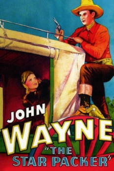
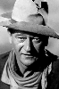
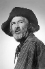
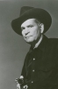
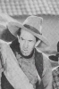

Country:United States, 53 minutes
Spoken languages:English
Genres:Action, Adventure, Drama, Western
Director(s):Robert N. Bradbury
Writer(s):Robert N. Bradbury
Video Codec:Unknown
Number: 187


Certification:
Storyline:
John Travers and Yak, his faithful Indian sidekick, pick up where a murdered sheriff leaves off, and try to nab the mysterious Shadow.
Cast:    
Medium: VHS tape,
Comments: Part of: John Wayne Western Collection Volume II
Loaned: No
Aspect ratio: Unknown